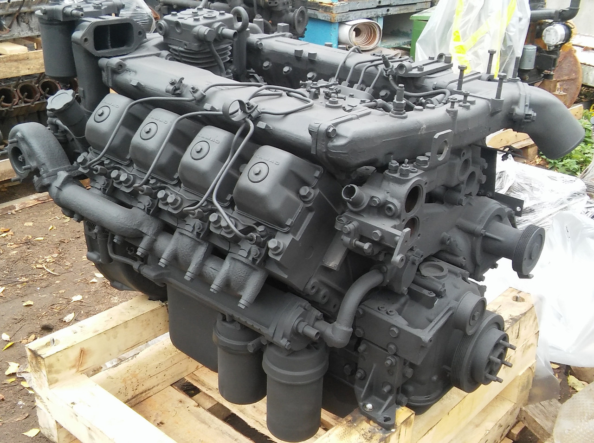
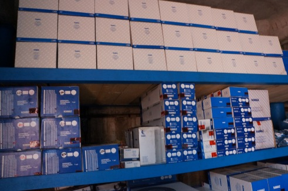
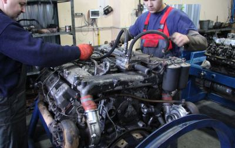

«ЧелныАгрегатЦентр» более десяти лет специализируется на ремонте двигателей КамАЗ и оптовой торговле запасными частями для автомобилей КамАЗ.
Капитальный ремонт в Краснодаре
Качественный результат.
Гарантия 6 мес.

Только оригинальные запчасти, купленные на заводе КамАЗ

Высококвалифицированные специалисты.

Список работ:
- ремонт коленчатого вала
- ремонт блока цилиндров
- ремонт твнд
- замена поршневой
- замена маховика
- ремонт шатунов
- замена водяного насоса
- замена генератора
- ремонт компрессора
- ремонт кулисы
- замена картер масляный
- ремонт насоса гура
- использование только качественного РТИ
- ремонт головки блока
- замена коллекторов двигателя
- транспортировка двигателя
Экологический классы:
Евро 0 - Старые модели моторов;
Евро 1 - Турбо до 2002 года без интеркулера;
Евро 2 - Турбо с интеркулером;
Евро 3 - Аппаратура электронная (БОШ) .
Стоимость ремонта двигателя КамАЗ :
- Двигатель 740 – от 135'000 руб.
- Класс евро 1 – от 170'000 руб.
- Класс евро 2 – от 190'000 руб.
- Класс евро 3 – от 290'000 руб.
Цена ремонта зависит от нескольких факторов:
- общее состояние двигателя.
- состояние навесного оборудования;
- необходимый вид ремонта (капитальный, техосмотр).
Сначала двигатель КАМАЗ разбирается, проводится дефектовка, определяются список запчастей.
Используются только оригинальные, закупаемые в ООО «АвтоЗапчасть КАМАЗ» (дочернаяя компания ПАО "КамАЗ")
Все запчасти для ремонта в наличии.
Частые причины неисправностей:
Ремонт двигателя КамАЗ производится по нескольким причинам:
- использование некачественных горюче-смазочных материалов.
- эксплуатация в агрессивных условиях.